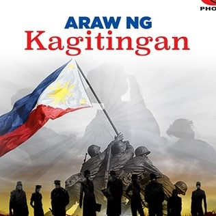
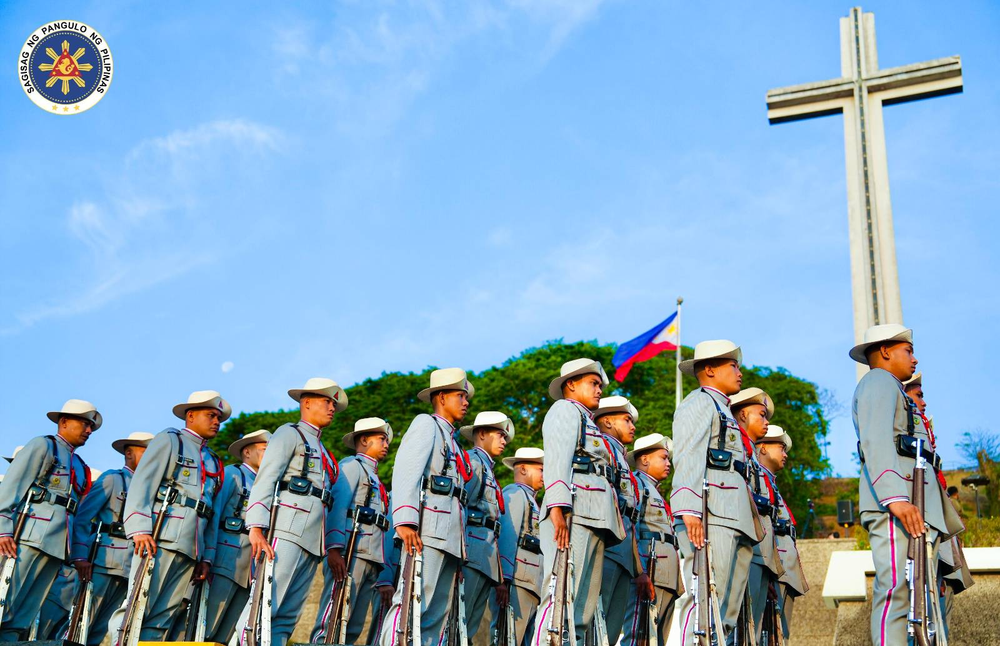

Date : April 9, 1942
|  |
Brief Description Araw ng Kagitingan is a non-working holiday that is part of a long weekend in the Philippines. This festival celebrated annually on April 9 is also called "Day of Valor" to honor the Filipino people for their role in the WWII triumph against the Japanese. |
|
Brief History
The Day of Valor, also known as Araw ng Kagitingan,
commemorates the heroism of Filipinos and American Soldiers when the Japanese occupied the Philippines during World War II.
Major General Edward P. King, of the United States Army, was forced to surrender more than 76,000 Filipinos,
Chinese and American soldiers to the Japanese at dawn on April 9, 1942. The soldiers were forced to take a 90-mile
(about 145 kilometers) hike to Camp O’Donnell in San Fernando. Thousands of prisoners died during the hike
(also known as the Bataan Death March) due to starvation, dehydration and diseases before they could
reach the camp.
|
 |
The Day of Valor was a national observance until a Letter of Instruction No. 1087, dated on November 26, 1980, made “Araw ng Kagitingan” a national public holiday to honor the people who helped bring democracy and freedom in the Philippines during the World War II era. Executive Order No. 203, dated on June 30, 1987, further proclaimed April 9 as “Araw Ng Kagitingan” to pay tribute to the heroes of Bataan, Corregidor and Bessang.
|
References |
Check Out More Philippine Holidays |